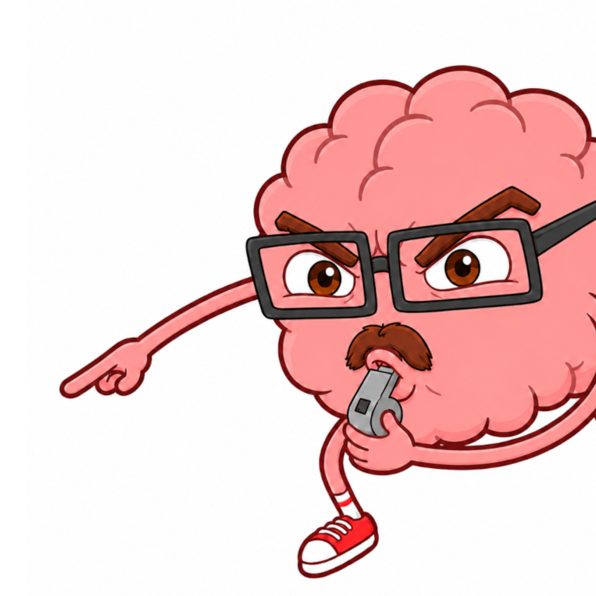

Focus Trainer Support
Help with timers, Full Access purchases, Screen Time, notifications, and app data.
Contact support
Email focustrainersupport@gmail.com.
Include your iPhone model, iOS version, Focus Trainer version, and a short description of what happened. Do not send passwords, payment-card information, goal names, timer labels, or other private text.
Purchases and Full Access
- Open the Focus Trainer menu, expand About, and select Full Access.
- Use Restore on the purchase screen when a previous purchase is not recognized.
- Monthly and yearly subscriptions are managed through your Apple Account subscription settings.
- Lifetime access is a one-time non-consumable purchase and does not renew.
Permissions
Notifications and Screen Time access are optional. Core timers, goals, habits, rewards, and analysis remain available without Screen Time. Some distraction shielding and app-activity reports require Apple's Screen Time authorization.
Local app data
Focus Trainer stores timer history, goals, habits, XP, achievements, and preferences locally on the device. Deleting the app also deletes this local data unless it can be restored from an Apple device backup.
Privacy
Read the Focus Trainer Privacy Policy for details about local data, optional permissions, analytics choices, and contact information.